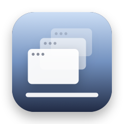

Show Desktop
Press ⌃⇧D or click once. Every window gets out of the way.
Thanks for downloading! If Show Desktop saves you time, a star on GitHub helps other people find it.
free · open source · macos 14+ · no internet access
Questions
How do I show the desktop on a Mac?
Install Show Desktop and click its icon in the menu bar, or press ⌃⇧D. Every window is hidden and your Desktop is showing. Click again to bring everything back. macOS also has a built-in Show Desktop on F11 (fn‑F11 on most MacBooks), which pushes windows to the edges of the screen instead.
What's the Mac equivalent of Windows+D?
Show Desktop works like Windows+D: press ⌃⇧D to hide every window, and press it again to put them all back.
How do I change the shortcut?
Right-click the menu bar icon and choose Keyboard Shortcut → Record Shortcut, then press the keys you want. Any combination with ⌃, or ⌘ with ⇧ or ⌥, works, and so does a function key like F13 on its own. Show Desktop won't take shortcuts that would get in the way of typing or that macOS already uses, like ⇧⌘3 for screenshots.
How do I hide all windows on a Mac at once?
⌥⌘H hides every app except the one in front. Show Desktop hides all of them, including the one in front and Finder's windows, and remembers exactly what to bring back.
Does it close or quit my apps?
No. Apps are hidden, the same as pressing ⌘H, and keep running with all their windows and unsaved work. Apps you'd already hidden stay hidden, and the app you were using comes back in front.
Is it safe?
Show Desktop runs in the macOS App Sandbox with no network or file access, so it can't connect to the internet or open your files. It never sees your windows' contents or your keystrokes, and the code is open source.